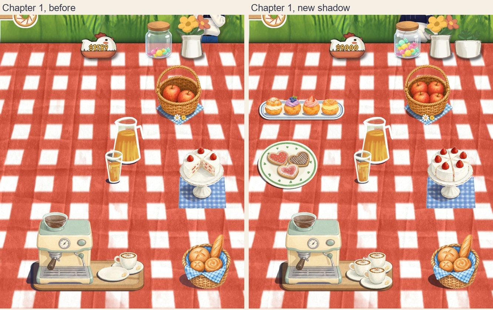
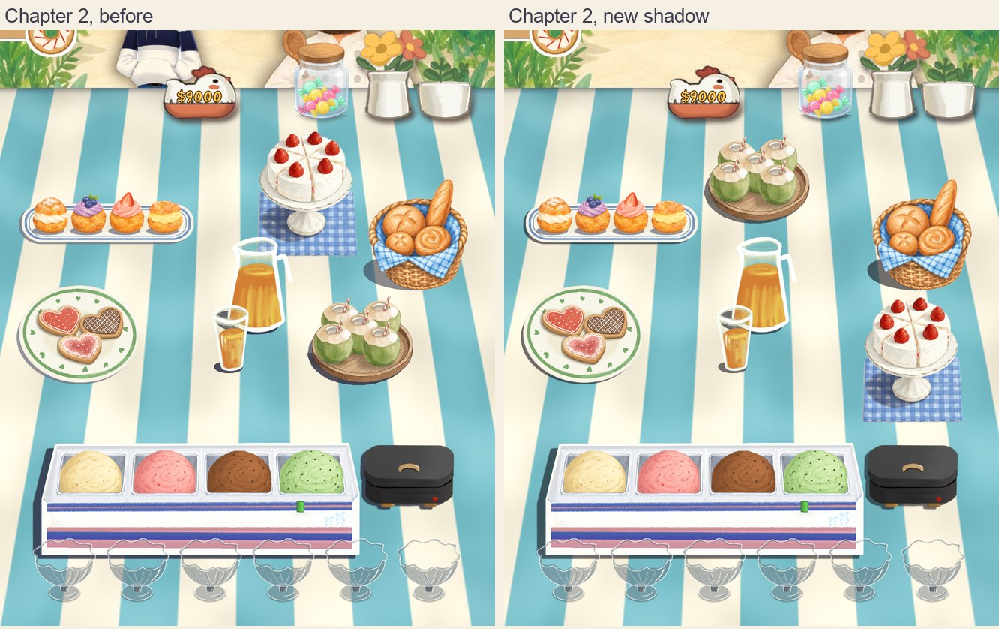
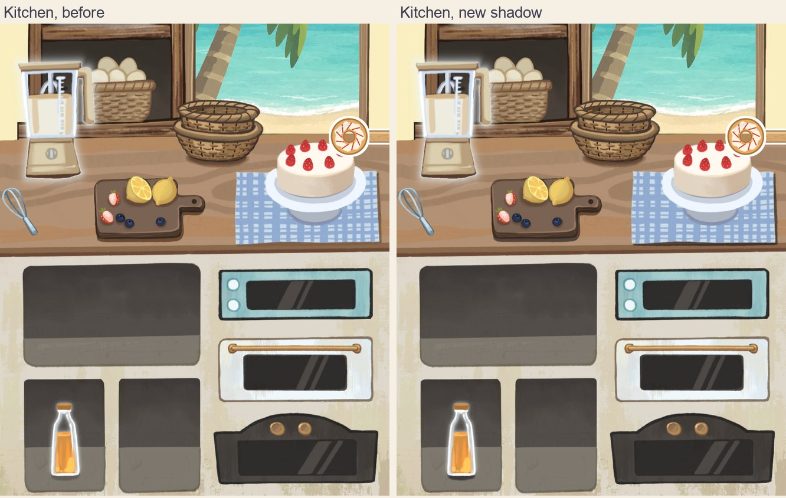
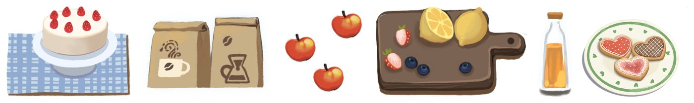
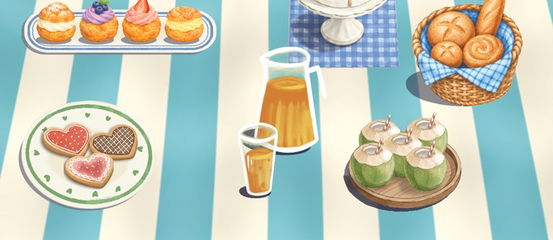
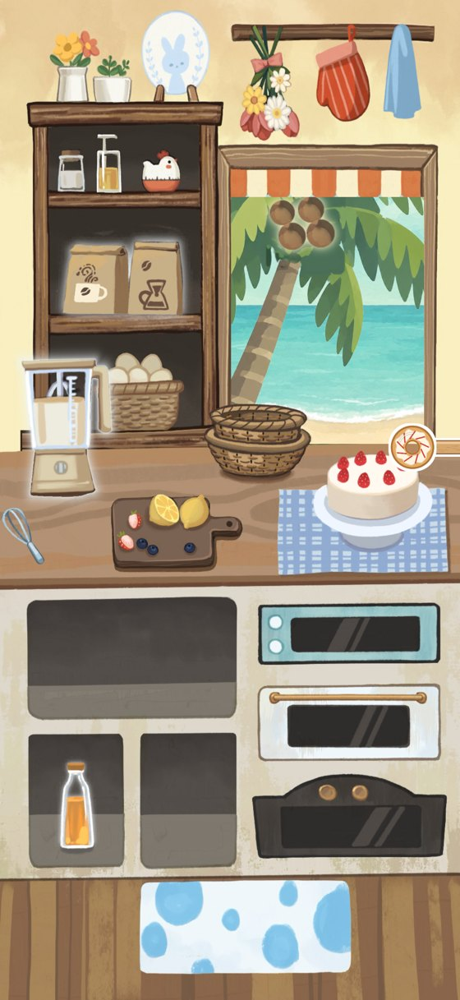

Food Truck Cafe
Your report for 15 November. 26.11.22 (build 35) and the 15 Stars purchase are waiting for Apple's review; they go on sale by themselves once approved.
1Next
You
Test build 36 (TestFlight, version 26.11.29): arrange the kitchen in the morning; try a red piece and see Ready go off. The new choux plate is on the table.
Kitchen (Current): tick how the arrangement feels; the old places are back (say "build" for a new test build); the glow brush also waits.
Shadows (Q&A): the one shadow at 60 % is on all items; look at the screenshots.
App Store page (Q&A): tick which improvements to make.
Me
Choux: ChatGPT's hand-drawn repaint of the four comes at 4:58 PM.
App Store page: waiting on your ticks.
2Q&A
You asked: one shadow for every cloth, at 60 %, on all items; show me screenshots (16 November)
Done, in the project, in no build: every item's shadow is now near-black 20, 16, 24, see-through at 60 %. Each shadow keeps its drawn shape; only its paint changed, so it is a darker shade of whatever lies under it.



- Changed: apples, bread, coconuts, coffee machine and cups, cookies, juice, choux plate, ice cream station, waffle machine, bin, candy jar, both flower pots; in the kitchen the cake cloth, the board and the juice bottle. About 90 pictures.
- Not changed: the cake stand's shadow on its own napkin (it is painted into the napkin's checks) and the hen's.
- How it was before: the kitchen's shadows were solid paint you picked per surface (brown on the wood, grey in the cabinet); the table's were grey-blue paint, which stayed grey-blue on red.
- The old pictures are kept, so this can be undone in one step.
You asked: are these choux at 40 degrees? (16 November)
- No, they are seen from lower, about 30 to 35 degrees. I measured the lemon choux's cream ring: it is an oval 0.55 as tall as wide. The table's look (the platter, the cookie plate, your heart plate) is 0.77 to 0.80.
- So next to the platter they look a little side-on: you see the side of the lid, hardly its top.
- Repaint queued for 4:58 PM today (your free ChatGPT picture is back at 4:56): from the platter's higher camera, keeping the four designs (the lemon without its slice), and in your hand-drawn style instead of the polished one. The style reference is your own pieces only:

- The brief asks for simple flat shapes, little detail, a soft dry brush grain, a few flat highlights, a few soft blotches on the crust instead of many crackles, and soft darker outlines.
You asked: what can we do on the App Store page itself, without marketing, so the game is found and downloaded more? (15 November)
How Apple ranks search: text that matches the name, subtitle, keywords and category, and how people react: downloads, ratings and reviews. The description and promotional text do not count for search; they only help someone who opened the page decide.
Where we stand today: name "Food Truck Cafe"; subtitle "Bake, serve & grow your cafe"; 99 of 100 keyword letters used; category Simulation and Casual; English only; 0 written reviews, and the game never asks for a rating; no in-app events; no custom pages; no iPhone Duo pictures.
What I suggest, most useful first:
- Ask happy players for a rating. Apple's own rating popup, shown at a good moment (after a 3-star day), at most 3 times a year as Apple allows. Ratings help the ranking and the page. A small code change; the biggest win for us.
- Better keywords and subtitle. Apple: no word twice across name, subtitle and keywords; no plurals; no "game" or "app". Ours repeat nothing, but miss what the game now has: ice cream, waffles, the beach, coffee, barista. For example:
- Subtitle "Cozy bakery & cooking tycoon" (28 letters).
- Keywords restaurant,kitchen,chef,coffee,barista,ice cream,dessert,cake,pastry,diner,cute,sweet,waffle,beach (98).
- An in-app event for the winter chapter in mid-December. Events show on the product page, in search and on the Today tab, and they are free. It is the only "news" slot Apple gives that needs no ads.
- Update the description and promotional text. They don't affect search, but they are what people read. The description still says "serve two customers at a time" and never mentions the beach, ice cream, chapters, the star shop or the yoga lady. The first sentence matters most. The promotional text (170 letters) can be changed at any time without a review; good for "New: ..." lines.
- iPhone Duo pictures. Apple's iPhone Duo is on sale since 23 October. Duo pictures give the page a "made for iPhone Duo" badge, and from April 2027 every update must include them. They need captures at the Duo's sizes; a full Duo-ready build needs Xcode 27.1 (we have 26.3), and I still need to check that our Unity version supports it.
- A custom product page for ice cream, tied to keywords such as "ice cream" and showing the beach pictures first. Apple now lets such pages show for their keywords in search.
- Extra English store languages (UK, Australia) give more keyword fields. This is common practice among app makers; Apple does not document how much it helps.
- Later, with more visitors: Apple's A/B test of icon and pictures. With today's few visits a test would take many weeks.
Sources: Apple: App Store search, Apple: Creating your product page, Apple: iPhone Duo, Apple: Custom product pages.
You asked: have you read all of Apple's asset best practices page? (16 November)
Not before today; on 15 November I had read Apple's search, product page, custom page and iPhone Duo pages. Now read in full: every section of the page, and its three size pages (creative assets; screenshots and video with every device section opened).
New from this page, not in my list above:
- Big pictures for the top of the page and for search (new with iOS 27). A wide "header" picture opens the product page; a "search" picture can replace our video and screenshots in search results. One universal picture (5244 x 2950, PNG, the important part inside a 1402 x 962 centre box) can fill both. Apple says the universal picture is what it needs to show an app in its large featured spots on the App Store and Games tabs. We have none. It can go up any time through the Asset Library, without a new version (it still goes through Apple's review).
- Video (the new one, going live with 26.11.22):
- Apple: the loop must be smooth. Ours ends on the night beach and jumps back to the forest day.
- Apple: the first seconds must grab. Ours opens on one customer waiting; the first serve comes at about 3 seconds.
- The cover frame is at 5 seconds (forest serve). The ice cream beach would show the newest part of the game.
- The kitchen part (7 to 10 s) is still; nothing gets made.
- Screenshots: we use 6 of 10. Apple asks for the game in use and one look across all of them. The captions sit at the top on 1 and 2, big at the bottom on 3, small at the bottom on 4 to 6. The kitchen shot has empty ovens. The shop shot shows dark silhouettes of locked items.
- Winter in-app event: needs two pictures, a 16:9 card and a 9:16 page; the "New Season" badge fits. Apple: the art should not repeat the badge's words.
- Correction to item 5 above: our video already counts for iPhone Duo (same 886 x 1920 file, uploaded to the Duo slot). Only Duo screenshots are missing.
Apple's rules, checked: no real prices, links, copyright sign, awards or other stores in our pictures; all fit a 4+ rating. The in-game coin amounts are fine.

Source: Apple: asset best practices, creative asset sizes.
3Current
Choux: the new plate and ChatGPT's four choux are in the game, test build 36, 16 November.

- The choux leave from the right: lemon first, the original last.
- The order bubble, the menu sticker and the shop card still show the old choux.
Kitchen arrangement: built, in test build 36, 16 November.

How it works:
- When: in the morning, while the table is being arranged. Pull the handle to the kitchen; the seven pieces wiggle and can be dragged. During the day they stay put and work as always.
- Table: a piece stays where you drop it, if its foot is on the counter. Two boxes touching: both turn red.
- Cabinets: a piece dropped inside jumps to its place on the floor. Too big, or two pieces on one place: red.
- Anywhere else (wall, window, ovens): the piece is red in your hand and goes back where it was when you let go.
- Red kitchen, no day: back at the table, Ready is greyed and the kitchen handle pulses red. Fix the red piece and Ready comes back.
- In the kitchen the Ready button, the hint banner and the small menu are hidden, so nothing lies on the counter.
- Your arrangement is saved when the day starts. A new purchase that lands on a moved piece resets the kitchen to the game's own places.
Places, changed after build 36 (your word): blender, board, baskets and cake are back where they always were; the whisk stays at the left edge. Not in a build yet.

- The board stands a little further right and lower than before, and the baskets a little further right (about 30 pixels each). At the exact old spots their boxes touched the blender's and each other's, so the kitchen would start red.
- An arrangement you saved in build 36 is dropped once, so you see these places.
I used all four cabinets. The whisk is its own piece now, on the smoothed counter.
Kitchen: a glow brush copied from the coffee bags and the tree's apples, 15 November. The blender's glow repainted with it; in the game, in no build.

- What the bags' and apples' glow is: brightest right at the object's edge and the same width all round it, like a soft white brush run along the outline. Cool white, the same in both.
- Mine was the opposite: nearly nothing at the edge, brightest a few pixels out, then a long fade. That reads as a blur.
- Its width follows the object's size: the bags' band is 30 pixels, an apple's 14. The brush works it out for each object.
- The brush (Docs/tools/glow_brush.py) paints this glow around any picture, as its own layer or baked into the picture. Re-painting the bags and apples with it gives back their own glow.
The kitchen with everything bought, 15 November. Every food, all three ovens, the coffee machine and ice cream at their top level.

- The pull handle sits on the cake at its starting height; it can be dragged up or down.
4MVP
For the release after 26.11.22. Nothing here is in a build.
The three things for the next release (your pick):
- Redraw the choux. The new plate with ChatGPT's four flavours is in test build 36; the hand-drawn repaint replaces them later.
- Redesign the kitchen. Seven pieces are arrangeable in test build 36 (free on the table, snapped in the cabinets, red blocks the day). After it: the pieces back at their old places, whisk at the left edge.
- Improve the App Store page. Your ticks on the Q&A list choose which parts.
5Backlog
Nothing open.
6Analysis
Nothing open.